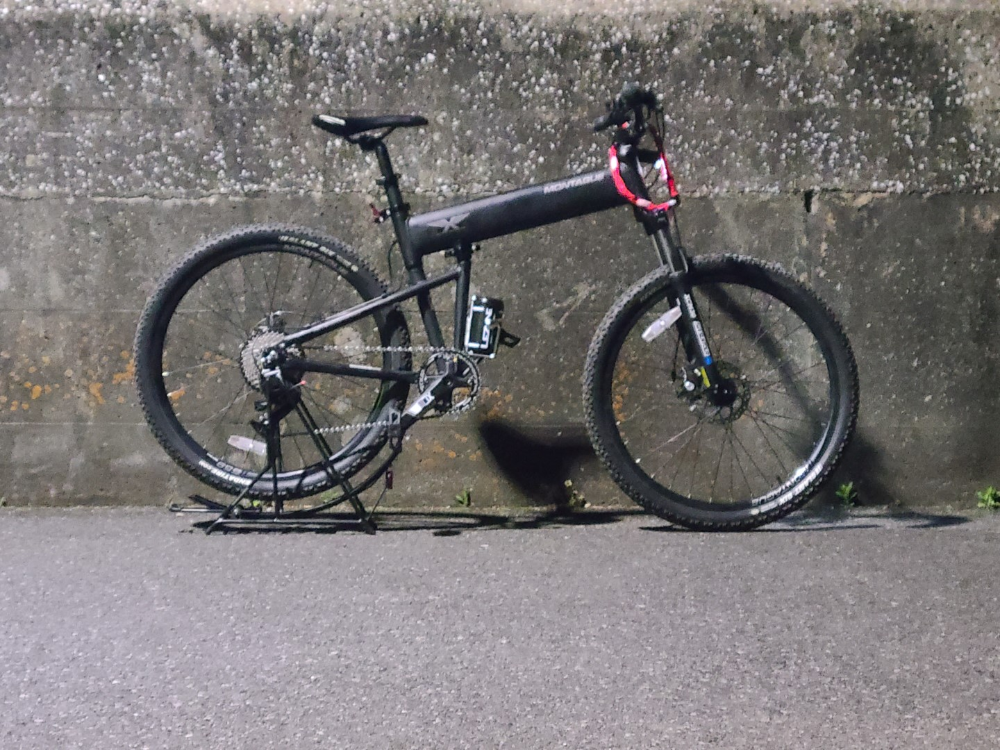
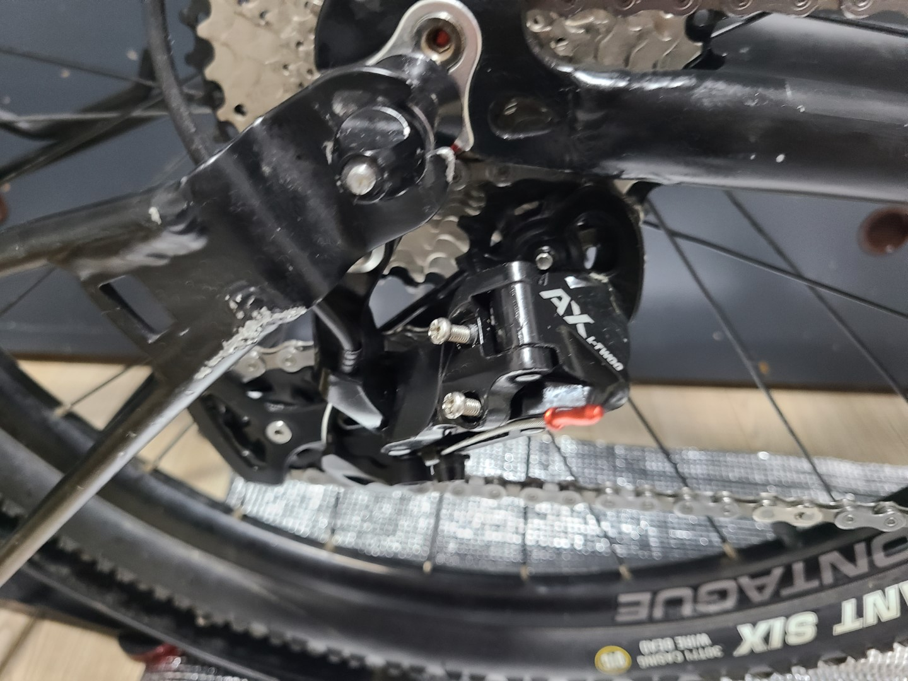
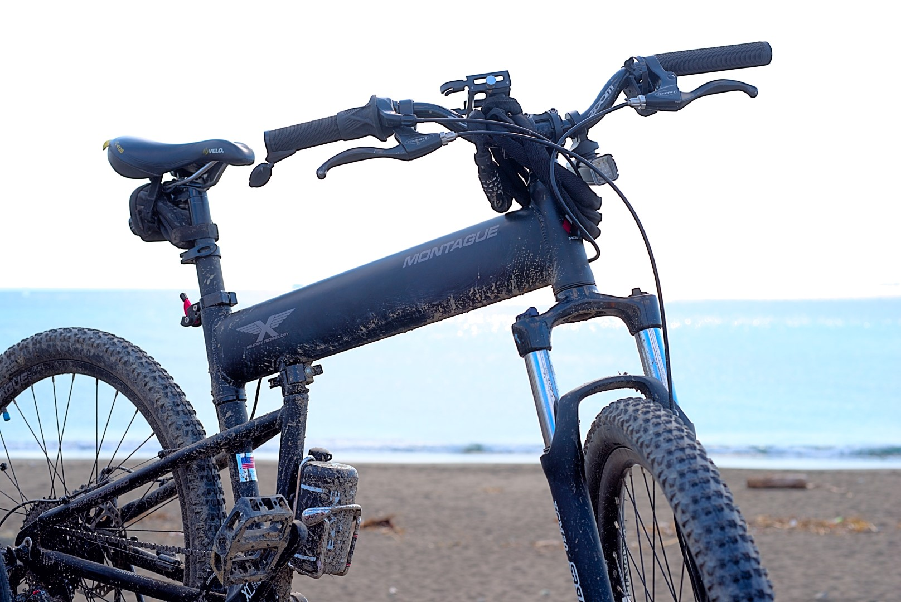

投稿日2023-04-05
改造
2月のどこかで買ったパラトルーパーProだが、実は3月中には殆どのパーツを取り替えてしまった。
レバースキュワー化にフロントシングル34T、リア11速11-40T、ショートステムにライザーバーの取り付け、そしてシフターをあえてSRAMのグリップシフトに変えた。

ディレーラーは物は試しとL-twooのAXにしてみた。変速自体はうまくいったもののシャドーではないのでトップ側３速くらいに入れていると付属のキャリアスタンドと干渉してしまうことが発覚した。

どっちにしろパニアを積むならスタンドとしては使えなくなるのでいいっちゃいいんだけどさ……。
ちなみにブレーキレバーも変える予定はあったが普通に握り心地が良かったので見送ることにした。
ということで早速弄り倒したパラトルーパーであったが実戦投入できたのはつい最近のことであった。
走破
ということで技術とパッキングもうちょい良くすれば全然ダート怖くないね！って感じでした pic.twitter.com/InY9zlqxHY
— わくせい (@ADlGCrQjlnyDKCg) April 3, 2023
普通に千葉県内の林道を30キロ近く走ってみた。本格的なオフに踏み入れるのは初めてだったが最悪押せばいいというのは精神的には楽であった。
その中でいくつか今後改善したい点も見えてきたので羅列しておく。
- 重心問題 予想はしていたがキャリア上部にバックパックを積載するとバランスが取りにくい。ガレ場ではかなりシビアに求められるので大人しくパニアを積むべきか。
- チェーンライン やはりオフセットチェーンリングを使わないとローに入れたときの効率が悪い気がする。これについては今月対処する予定。
- ギアが重い 正直千葉県内の林道で38T-40Tの限界を感じるとは思わなかった。なぜ46Tが流行っているのか理解できた。
- 輪行袋クソデカ問題 適当に用意した輪行袋がバカクソでかかったのでどうにかしたい。いやもうどうにかした。
- アタッチメント追加 せっかくのチューブ形状を生かさない手は無いだろう。ドリンクホルダーなどチューブにどうにか取り付けてカスタムしていきたい。
そんな感じで色々と改善点が見つかったところでもう少しだけ弄っておきたい。夏あたりには装備を確定させてでかけ、られるといいなぁ。
泥だらけになったパラトルーパーくん、いよいよMTBらしくなってきた。

ではまた～。